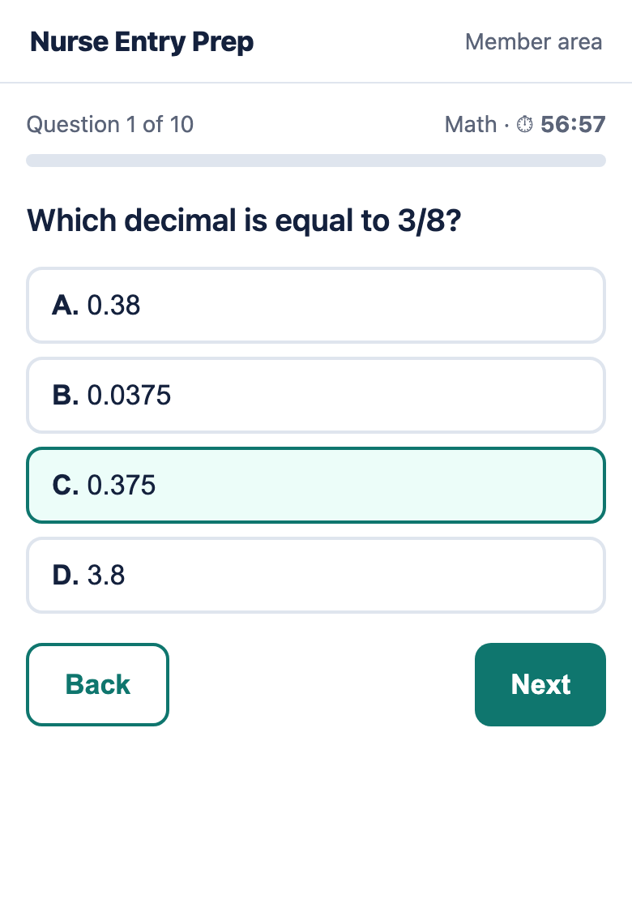
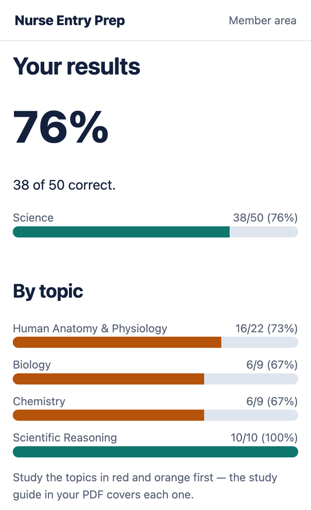
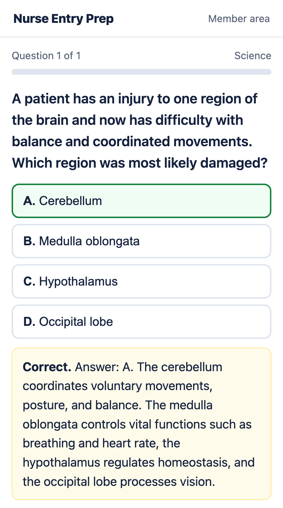

For future nurses taking the ATI TEAS® 7
One test stands between you and nursing school. Pass it the first time.
According to ATI, about 4 in 10 test takers end up retaking the TEAS. Each retake means paying the fee again, waiting weeks for a new date — and sometimes watching your application deadline go by.
Walk in already knowing what the test looks like, how the clock feels and exactly which topics you need to fix.
✔ Instant access ✔ One-time payment, no subscription ✔ 7-day money-back guarantee
Your practice test report
Weakest topic: Human Anatomy & Physiology → study this first
Example of the report you get after each timed exam
What a TEAS retake really costs you
$110–$132
Paid again. Every time.
Each new attempt means a new exam fee. Two retakes add up to $220–$264 — more than four times the price of this pack.
2–4 weeks
Waiting to try again
Many schools require a waiting period between attempts and limit how many times you can test each year.
6–12 months
A missed cohort
Miss the application deadline and you may wait for the next start date — while your classmates begin clinicals without you.
The Practice Pack costs less than half of a single retake.
Picture the day the email arrives: "Congratulations, you've been accepted."
The scrubs. The first day of clinicals. The career you've been working toward. It starts with one score — and the students who get there are the ones who walked in prepared, not hoping.
How you go from nervous to ready
1
Find your weak spots
Take a full timed practice exam. Your report shows your score by section and by topic, so you stop guessing what to study.
2
Fix them fast
Practice mode explains every answer — why the right one is right and the trap most people fall for. The study guide covers each topic in plain language.
3
Walk in confident
Take the second full exam under real timing. Same sections, same question types, same pressure — so test day feels familiar.
See exactly what you get
Real screens from the Practice Pack — on your phone or computer.



Try 3 real practice questions right now
Tap an answer to see if you got it — and why.
Everything in the TEAS 7 Practice Pack
- 2 full-length online practice exams — 170 questions each, timed like test day: Reading (55 min), Math (57), Science (60), English & Language Usage (37).
- Score report by section and topic after every exam — know exactly what to study next.
- Practice mode — check each answer instantly while you learn.
- Every answer explained — 340 original questions with clear explanations.
- All TEAS 7 question formats — multiple choice, select-all-that-apply and fill-in items.
- Study guide — high-yield anatomy & physiology, math formulas and conversions, grammar rules, Greek and Latin roots.
- 4-week study plan + 2-week crash plan — day by day, so you never wonder what to do next.
- Printable PDF of everything, plus access on your phone or computer.
Included bonuses — inside your Practice Pack
Bonus 1 TEAS Math Formula & Conversion Sheet — every formula, metric/US conversion and fraction-decimal-percent shortcut in one place.
Bonus 2 40 Medical Word Roots, Prefixes & Suffixes — decode unfamiliar words on the Reading and English sections (cardi-, hepat-, -itis…).
Bonus 3 2-Week Crash Plan — test coming up fast? A day-by-day plan that puts your weakest section first.
Bonus 4 Test-Day Checklist — timing strategy for each section, what to bring and how to handle the clock.
Official ATI practice packages: $69–$169
One TEAS retake: $110–$132
$49
One-time payment. No subscription, nothing to cancel.
Get instant access🔒 Secure checkout processed by Hotmart · Major credit cards accepted
Don't wait for the deadline to sneak up on you
Many fall nursing programs close applications between February and March, and most want your TEAS score before you apply. Starting now gives you time to study, test — and still have room for a second attempt if you ever need one.
Start preparing today — $49Questions
Math and science aren't my strong subjects. Will this help?
That's exactly who it's for. Your first report shows which topics are pulling your score down, the explanations walk you through each answer step by step, and the study guide covers the formulas and body systems in plain language.
How long do I need to prepare?
The 4-week plan works for most people. If your test is close, follow the 2-week crash plan and focus on your lowest section first.
Is this the official TEAS prep?
No — and that's why it costs $49 instead of $69–$169. Nurse Entry Prep is an independent study product. Our 340 questions are original and written to match the published TEAS 7 content areas. They are not actual exam questions.
How do I get access?
Instantly. Right after payment you receive an email with your access link and code. Works on phone and computer.
Is it a subscription?
No. You pay once. There is nothing to cancel.
What if it isn't right for me?
Ask for a refund within 7 days of purchase and you get your money back. No questions asked.
Does it cover the HESI A2?
This pack is built for the TEAS 7. Many topics overlap with other nursing entrance exams, but the format and timing follow the TEAS 7.
Your future patients are waiting. Pass the test that gets you there.
Two full timed exams, every answer explained, a plan for every day until test day.
Get the TEAS 7 Practice Pack — $49Instant access · One-time payment · 7-day money-back guarantee